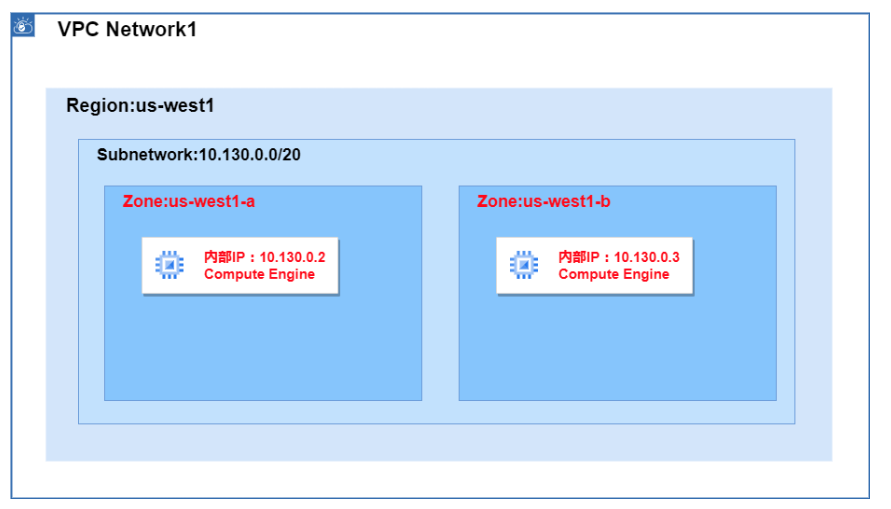

4. Network¶
4.1. VPC¶
VCPとは、Google Cloud内に提供される仮想ネットワーク提供サービス。
4.1.1. VCPネットワーク¶
Google Cloud内に構成される仮想ネットワークをVPCネットワークと呼ぶ。 VPCネットワークはグローバルリソースであり複数のリージョンを収容可能。
 【よくわかる Google Cloud】VPCネットワークとは
【よくわかる Google Cloud】VPCネットワークとは
また、リージョン内のサブネットに作成されたVNなどには内部IPが割り当てられ、VPC内の通信に関しては異なるサブネットに所属していても内部IPを利用して通信が行われるため、特別なルーティング設定なしに可能である。 すなわち、GCPにおいては、VPCを構築するだけでマルチリージョン構成を構築できる。
4.1.2. サブネット¶
サブネットとは、ネットワークのIPアドレスを論理的に分解した小さなネットワークである。 サブネットは、CIDR表記を利用されて表現される。 VPC内部においてサブネットを定義する際にはVPC内でCIDRが重複しないよう設定を行う必要がある。
サブネットはリージョンリソースであり、複数のZoneに跨いで定義することができる。  【よくわかる Google Cloud】VPCネットワークとは
4.1.3. ルーティング¶
ルーティング（経路制御）では、VPC内のトラフィックをどこに転送するかのルールを定義する。
VPCネットワークごとにルートテーブルが存在し、宛先CIDRごとに送り先を定義する。
VPCネットワークを作成したタイミングでデフォルトとしてデフォルトルートとサブネットルートという2種類の自動毛色が自動で登録される。
種類 |
内容 |
|---|---|
サブネット間ルート |
VPC作成時に、自動生成。すべてのサブネット間通信を許可するルート（削除不可） |
デフォルトルート |
VPC作成時に、自動生成。。IGW（default-internet-gateway）に向く |
カスタムルート |
特定のCIDRをVPN、Peering、VMインスタンスなどに向けるための追加ルート |
例としては以下のような設定を行う。
宛先 |
次ホップ |
備考 |
|---|---|---|
10.128.0.0/9 |
local |
自動生成（同じVPC内の他サブネット） |
0.0.0.0/0 |
default-internet-gateway |
インターネット向け（デフォルト） |
10.0.0.0/16 |
vpn-tunnel-1 |
オンプレミスVPN |
192.168.0.0/24 |
instance-1 |
ルータ代わりのVMなど |
4.1.4. IGW¶
デフォルトインターネットゲートウェイは、GCP環境内に自動で作成される、インターネット接続ポイントであり、VPCネットワーク作成時に自動で有効化されており、削除もできない。
ルートの設定は、VPC全体に適用されるため、サブネット単位でインターネット接続の可能不可能を制御しない。つまり、GCPにおいては、Public SubnetやPrivate Subnetといった考えは存在しない。GCPにおいて、外部への接続の制御は、Firewallで行う。
また、外部IPを持っている場合は外部IPを利用してIGWを経由してアクセスを行うが、外部IPを持たせたくない場合はNATを経由してアクセスする。
4.1.5. Cloud NAT¶
Google Cloud でインスタンス（例：Compute Engine）からインターネットに接続するには、通常は外部IPアドレスを付与する必要がある。ただし、外部からの通信は受け付けたくない、つまりインバウンド通信を遮断したい場合には、外部IPを付与せずにアウトバウンド通信だけを有効にしたくなる。このようなケースで利用するのが Cloud NAT（Network Address Translation） である。
Cloud NAT を構成するためには、Cloud Router がセットで必要となる。Cloud Router は、Cloud NAT のルーティングを制御する役割を担う動的ルーティング機能であり、NATゲートウェイのバックエンド的存在。
Cloud NAT は、対象となるサブネットまたはサブネット内のIPレンジ（例：特定のVMのプライベートIP範囲）を指定することで、そのサブネットからのアウトバウンド通信を自動で変換してくれる。つまり、VM やアプリケーション側では NAT の存在を意識する必要はない。
4.1.6. Firewall¶
Firewallとは、ターゲットへの通信において、ポリシーを定義することで許可または拒否するセキュリティ機能。
GCPにおいては、VPCに対してFirewallを定義することができ、インバウンドやアウトバンドの通信についてポリシーを適用することができる。具体的には、以下のようにルールを適用できる。
要素 |
説明 |
|---|---|
direction |
INGRESS（受信） or EGRESS（送信） |
action |
ALLOW または DENY |
sourceRanges / destinationRanges |
INGRESSでは送信元、EGRESSでは宛先をCIDRで指定 |
protocols / ports |
TCP/UDPなどとポート番号の組み合わせ |
targetTags / targetServiceAccounts |
このルールを"どのVMに"適用するか（タグ or SA） |
INGRESSとEGRESSでそれぞれの要素の具体的な意味合いが異なるのでそれぞれについてまとめると以下。
要素 |
INGRESS時の意味 |
EGRESS時の意味 |
|---|---|---|
action |
ALLOW or DENY（受信の許可/拒否） |
ALLOW or DENY（送信の許可/拒否） |
sourceRanges |
通信の送信元IP（例：0.0.0.0/0） |
使用しない（EGRESSでは指定不可） |
destinationRanges |
使用しない（INGRESSでは指定不可） |
通信の宛先IP（例：8.8.8.8/32） |
protocols / ports |
どのポートを許可するか（例：tcp:22） |
どのポートを許可するか（例：tcp:443） |
targetTags / targetServiceAccounts |
通信を受けるVMの指定 |
通信を出すVMの指定 |
priority |
優先度。数値が小さいほど優先 |
優先度。数値が小さいほど優先 |
4.1.7. ネットワークの拡張¶
VCPを拡張し、他のVPCやオンプレミスと通信する方法には以下のようなものがある。
拡張手段 |
接続対象 |
特徴 |
用途例 |
帯域/性能 |
備考 |
|---|---|---|---|---|---|
VPCピアリング |
GCP内の他のVPC（同一 or 他プロジェクト） |
GCP内の2つのVPCを内部IPベースで直接接続。 |
組織内の複数VPCを統合したい場合など |
高性能（GCP内バックボーン使用） |
双方向に明示的な設定が必要。トラフィックの転送/制御はやや限定的 |
共有VPC |
同一組織内の複数プロジェクト |
ホストプロジェクトでVPCを作成。 |
セキュリティとネットワーク管理の一元化 |
高性能 |
ホストプロジェクトとサービスプロジェクトの関係で構成 |
Cloud VPN |
オンプレミス or 他クラウド |
IPsecベースのVPN接続。すぐに使える柔軟な構成 |
小～中規模のハイブリッドクラウド構成 |
数百Mbps～最大10Gbps程度 |
HA VPNを使うと冗長化可能 |
Cloud Interconnect |
オンプレミス or データセンター |
高帯域・低レイテンシの専用回線。DedicatedとPartnerの2種がある |
大規模な企業の本番環境や高性能要件 |
10Gbps〜100Gbps |
接続にはCloud Routerが必要 |
Cloud Interconnectについては、さらに専用線のDedicatedとパートナー事業者を通じたParterがある。
種類 |
概要 |
接続場所 |
導入難易度 |
備考 |
|---|---|---|---|---|
Dedicated |
Googleと直接物理接続する専用線 |
GoogleのPOP（相互接続拠点） |
高 |
専用ポートと帯域（10Gbps単位）を選択可能 |
Partner |
Googleのパートナー（通信事業者など）を通じて接続 |
任意の場所（パートナーが提供） |
中 |
柔軟な帯域・地域対応。事前の契約が必要 |
4.1.7.2. VPCピアリング¶
異なる VPC 同士を 対等に直接接続する方式で、CIDR の重複が許されない点に注意が必要。
4.1.8. ネットワーク内の安全性（VPCSC：VPC Service Contorls）¶
VPC Service Controls は、BigQuery や Cloud Storage などの
Google Cloud マネージドサービスを「論理的な境界（Service Perimeter）」で囲い、
境界外へのデータ流出を防ぐためのセキュリティ機構である。
IAM による「誰が（Who）」「何を（What）」という認証・認可に加え、
「どこから（Where）」そのリクエストが来たのかを評価対象に含める点が特徴。
なぜ VPC Service Controls が必要なのかというとIAM だけでは、次のようなリスクを防げない。
正しいユーザー・サービスアカウントが誤って、または悪意を持って社外・インターネット経由からデータにアクセスする
IAM は 認証・認可（Who / What） は制御できるが、
通信経路（Where） までは制御できない。
そこで VPC Service Controls を使う。
4.1.8.1. VPC SCの境界¶
VPC Service Controls（VPC SC）の「境界」とは、 Google マネージドサービスの API に対して適用される 論理的なデータ境界（Service Perimeter）である。
この境界は、ネットワークの物理的な線や VPC の境界ではなく、 API 呼び出し時に評価されるルールの集合として定義される。
VPC SC は、API 呼び出しごとに以下の観点で 「このリクエストが境界内か」を評価する。
対象サービスが Service Perimeter に含まれているか
（例：BigQuery、Cloud Storage など）呼び出し元のプロジェクトが境界内に属しているか
（Service Perimeter はプロジェクト単位で定義される）アクセス元が境界内と認められた経路か
境界内プロジェクトの VPC
Private Google Access 経由
許可されたオンプレミス（VPN / Interconnect）
IAM の認証・認可を満たしているか
（VPC SC は IAM を置き換えない）
4.2. GCPの通信整理（内→内・外→内・内→外）¶
4.2.1. 内→内：VPC 内通信（VM / GKE）¶
通常の RFC1918 アドレス通信
firewall / routing がそのまま適用される
4.2.2. 外→内：VPC外のサーバレスサービス → VPC内¶
4.2.2.1. Serverless実行環境と VPCの接続¶
Cloud Run や Cloud Functions は、VPC の外で実行されるサーバレス環境である。 そのため、VPC 内のリソース（Private IP）にはデフォルトでは到達できない。
サーバレス環境から VPC 内へ通信するための出口（egress）を提供する仕組みとして、Serverless VPC Access コネクタが利用される。
Cloud Run
↓
(Serverless VPC Access)
↓
PSC Endpoint（自分のVPC内IP）
↓
Google内部バックボーン
↓
Cloud SQL
4.2.3. 内→外：VPC内 → VPC外のGCS API¶
VPC 内部（外部 IP を持たない VM や GKE ノード）から、Google のマネージドサービスにアクセスする場合の考え方を整理する。
4.2.3.1. Private Google Access¶
Private Google Access（PGA）は、外部 IP を持たない VM や GKE ノードから、Google APIs にアクセスできるようにする仕組みである。 PGA は、一般的なインターネット通信ではなく、「Google APIs 向けの特例ルート」として位置づけられる。
4.2.3.2. PGAの必要性¶
通常、Cloud Storage API や BigQuery API などの Google APIs は、ネットワーク上では インターネット上のパブリック IP 宛の通信として見える。
そのため、外部 IP を持たない VM、Cloud NAT を構成していない環境からは、Google APIs に到達できない。
4.2.3.3. PGAの仕組み¶
Private Google Access を有効にすると、Google APIs 宛の通信だけを対象に、インターネット通信として扱わずGoogle の内部バックボーン経由でルーティングするという 例外的な経路が VPC に追加される。
これにより、外部 IP や Cloud NAT を持たない VPC 内リソースからでも、Google APIs へ安全にアクセスできるようになる。
4.3. VPC外部のサービスを内部として扱う¶
GCP では「VPC の外に存在するものを、VPC 内リソースのように扱いたい」 という要件に対して、役割の異なる 2 つの仕組みが用意されている。
Private Service Access（PSA）
Private Service Connect（PSC）
この 2 つは名前が似ているが、越える境界と役割が明確に異なる。 混同しないためには「何を VPC に引き込みたいのか」「どの境界を越えるのか」を先に考える必要がある。
4.3.1. Private Service Access（PSA）¶
Private Service Access は、Cloud SQL などの Google 管理サービスを、
自分の VPC に Private IP で引き込むための仕組みである。
PSA の本質は、
Google 管理サービスをVPC内として扱い、PrivateIPで通信する
点にある。
例えば、Cloud SQL（Private IP）は、ユーザーの VPC の中に直接存在しているわけではなく、 Google が管理するサービスとして別の管理ネットワーク上に存在している。 そのため、そのままでは VPC 内リソースとして扱えない。
このギャップを埋めるのが Private Service Access であり、 「Google 管理サービス専用の VPC 接続」と考えると理解しやすい。
代表的な対象は以下。
Cloud SQL（Private IP）
Memorystore
通信イメージは以下のようになる。
自分の VPC
↓
Private Service Access
↓
Cloud SQL（Google 管理・Private IP）
PSA には重要な制約がある。
接続対象は Google 管理サービスに限定される
PSA は Google 管理サービス専用の接続であり、別 VPC / 別プロジェクトの一般リソースには利用できない。
別プロジェクトや別 VPC のリソースには到達できない
つまり、Cloud SQL を Private IP で利用する場合、PSA は前提条件だが、PSA だけでクロスプロジェクト接続はできない。
4.3.2. Private Service Connect（PSC）¶
Private Service Connect は、別 VPC や別プロジェクト、外部サービスを、
自分の VPC に Private IP として出現させる仕組みである。
PSC の本質は、
外部にあるサービスをVPC 内の Private IP 宛通信として扱える
点にある。
PSC の設計思想は以下。
通信は常に Google の内部バックボーン
インターネットや NAT を通らない
VPC ピアリング不要
Producer / Consumer モデル
PSC を使うことで、 「どの VPC が、どのサービスに、どの IP で接続できるか」 をネットワーク構造として明示的に制御できる。
4.3.2.1. PSC の基本構造（仕組み目線）¶
Producer 側
Cloud SQL、内部サービス、SaaS などをPSC 経由で公開可能なサービスとして定義
この時点では Consumer 側の IP は存在しない
Consumer 側
自身の VPC に PSC エンドポイントを作成
VPC 内に Private IP（RFC1918）が払い出される
この IP 宛の通信が Google バックボーン経由で Producer に転送される
通信の性質
送信元・宛先ともに Private IP
firewall / routing 的にも VPC 内通信として扱える
4.4. クロスプロジェクトの通信¶
別プロジェクトに存在する Cloud SQL（Private IP）をCloud Run から利用するケースを考える。
4.4.1. パターン①：PSCを利用¶
Cloud SQL 側で Private Service Connect を有効化し、Cloud Run 側のVPCに PSC Endpoint（内部IP） を作ってそこへ接続する。
Cloud Run
↓（Direct VPC egress または Serverless VPC Access）
Consumer VPC（Cloud Run 側）
↓
PSC Endpoint（内部IP / forwarding rule）
↓
Service Attachment（Cloud SQL 側が提供）
↓
Cloud SQL（別PJ）
4.4.3. パターンC：PSAとVPCピアリングを利用¶
Cloud SQL がいるVPC（PSAでPrivate IP運用しているVPC）と、Cloud Run 側VPCを VPC Peeringで直結して、Cloud SQL の Private IP に到達させる。
Cloud Run（Project A）
↓（Direct VPC egress または Serverless VPC Access）
VPC-A（Project A）
↓
VPC Peering（VPC-A ↔ VPC-B）
↓
VPC-B（Project B）
↓
Cloud SQL Private IP（VPC-B のアドレス帯）
↓
PSA（service networking の VPC peering）
↓
Google 管理VPC（Producer 側）
↓
Cloud SQL instance（Project B）
4.5. Cloud Load Balancing¶
Cloud Load Balancing は、Google Cloud 上の Compute Engine や Cloud Storage などのバックエンドに対してトラフィックを自動で分散させるフルマネージドなサービスです。以下の特徴を持つ。
グローバル / リージョン / ゾーン間にまたがる負荷分散が可能
トラフィック量に応じて 自動スケーリング
ヘルスチェック機能によって正常なバックエンドへのみルーティング
HTTP(S)、TCP/SSL、UDP レベルでのロードバランシングをサポート
種類別の分類（用途・プロトコル・接続方式）
分類 |
説明 |
|---|---|
アプリケーションLB |
L7（HTTP(S)）レイヤで動作。Cloud CDNと連携可能。 |
プロキシ型ネットワークLB |
L4（TCP/SSL）レイヤのプロキシ型LB。IP非公開アクセスに対応。 |
パススルー型ネットワークLB |
L3/L4パススルーで構成、オンプレやVMのNICへ直接到達するケース向け。 |
デプロイモードの違い
項目 |
外部LB（External） |
内部LB（Internal） |
|---|---|---|
接続元 |
インターネットからのトラフィック |
VPC内部からの通信 |
主な用途 |
Webアプリ、API公開用など |
社内システム、サービス間通信など |
グローバル対応 |
アプリケーションLBはグローバルに対応 |
内部LBはリージョン単位（グローバル不可） |
4.6. Cloud CDN¶
Cloud CDN は、Google Cloud が提供する グローバルエッジキャッシュネットワーク。
Google の世界中のエッジロケーションで静的/動的コンテンツをキャッシュし、低レイテンシ・高速配信を実現
バックエンドとして Cloud Load Balancing（特にHTTP(S) LB）とセットで使用する
オリジンサーバは Compute Engine, Cloud Run, GKE, Cloud Storage などが利用可能
CDN の利用には外部HTTP(S)ロードバランサのバックエンド設定が必要
4.7. Cloud DNS¶
Cloud DNS は、Google Cloud が提供する高可用性・低レイテンシのスケーラブルなDNSサービス。
ドメイン名とIPアドレスの変換（名前解決）を行う
ゾーンの作成 → レコード（A, AAAA, CNAMEなど）の定義 により、独自ドメインの管理が可能
4.8. VPC FlowLog¶
VPCフローログとは、
VPCネットワークを流れる通信フロー（L3/L4レイヤー）をCloud Loggintに記録する仕組み
である。
VPCフローログで設定することができる対象は以下の3つ
VPC
サブネット
NIC（VM単位）
4.9. Network Connectivity¶
Network Connectivity は、 オンプレミスや他クラウドを含むネットワーク同士を Google Cloud 上でどのように接続・管理するかという 課題領域（概念）である。
Network Connectivity という課題領域に対して、
Google Cloud では役割の異なる 2 つのサービスが用意されている。
Network Connectivity Center（NCC）
Network Intelligence Center（NIC）
4.9.1. Network Connectivity Center（NCC）¶
Network Connectivity Center は、
Network Connectivity の課題に対する 接続設計・接続構成の集約 を担うサービスである。
NCC は、通信経路そのもの（VPN や Interconnect）を提供するのではなく、
それらを前提として、
複数の VPC
複数プロジェクト
オンプレミス接続
を 一貫した Hub & Spoke 構成として整理・管理 するための
接続性管理プラットフォームである。
4.9.2. Network Intelligence Center（NIC）¶
Network Intelligence Center は、
ネットワークを 可視化・診断・分析 するための
観測・分析スイートである。
NIC は、ネットワークの設計や接続を「作る」ためのサービスではなく、
既存のネットワーク構成に対して、
接続性は成立しているか
どこで通信が断絶しているか
構成全体はどう見えているか
といった点を 理解・検証するための基盤を提供する。
4.9.3. NIC配下の機能群¶
NCには大きく2つの機能がある
Connectivity Tests: 接続診断のための機能
Network Topology: ネットワークトポロジーの可視化
4.9.4. Connectivity Tests¶
Connectivity Testsは、P2Pでの接続診断を行う。
以下の情報を指定することで動作する。
送信元（VPC / サブネット / VM / GKE クラスタ など）
宛先（同上）
プロトコル / ポート
これらを元にGCPの制御プレーン情報を利用して、以下を段階的に評価する
Firewallルール
ルーティング
VCP Peering / VPN / Interconnect
上記を踏まえ、設定的に通信が成立するか、成立しない場合どの段階で失敗するかを返す。